Imagine you’re planning a road trip across the United States. You pick thirty different cities to visit during the trip and have no preference on order. A question arises: what is the shortest possible trip that visits each city once and finishes home? And the problem is more complicated than it sounds from the question.
Specifically, the traveling salesman problem is NP-hard. This means that we don’t have any good algorithms for figuring out the shortest tour between a set of points; the only fully accurate way is to test all the paths and compare the lengths. This doesn’t sound so bad if you only have a small number of cities. However, for n different cities, there are n! different possible paths.
If you only want to visit 5 cities there are 120 different possible paths between them – probably too many to compute by hand but easy to evaluate with a computer. However, factorials grow very quickly. If you are trying to visit 30 cities, there are 30! different paths. This is a huge number. It’s about 265 nonillion and has 33 digits. Even for a computer, this is too many paths to examine individually.
Traveling Salesman Approximations
This number grows so quickly that at some point it isn’t feasible to find an exact solution. And in most cases, an approximate solution will be just fine. On your road trip, you probably won’t mind if you drive a few extra miles. (If you’re managing a bus company or an airline, this might be a different story.) So there are other techniques one can use that don’t try every single path but get an answer very close to the exact solution.
Discussing different ways to generate approximate solutions is probably beyond the scope of this discussion. However, it’s good to know that very accurate approximations can be generated. In fact, even for systems with tens of thousands of cities, we can generate an approximate solution that is guaranteed to be with 1% of optimal length.
Traveling Salesman Art
This Traveling Salesman Problem appears in some form in astronomical observation, DNA sequencing, and many other applications besides road-trip planning. My goal with this project was to create Traveling Salesman Art. It turns out that an interesting result is obtained from the following:
- Start with an interesting image with distinct regions.
- Put down some dots that look like that image.
- Treat these dots as “cities” and solve the TSP as closely as possible.
More visually, steps 1-3 look like this:
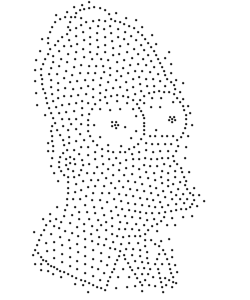
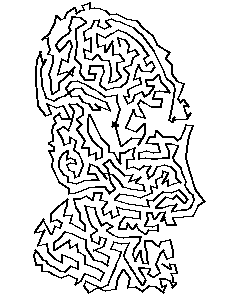
Putting Down The Dots
I initially tried to create an algorithm of my own to “stipple” an image. I decided to evaluate each pixel based on how much its color differed from the pixels around it. I then sorted the pixels by this value and took a fixed number of pixels with maximum color change. One by one, I started placing the dots. If any dot was too close to the dots already placed, I skipped that pixel.
This algorithm generated decent but slightly inaccurate stipplings for the test input images. There were a few reasons why it didn’t work properly.
First, there were many constants to manipulate for each image; the maximum number of dots and the minimum radius between dots both had to be decided manually for each image. It was difficult to choose values for each constant.
Second, the “color gradient” technique I devised for choosing dot locations does not accurately portray all of the information in an image. It places dots along the most defined borders in the image; however, regions of dense color and little change did not show up at all. This was suitable for most simple images but some more complicated images were almost unrecognizable.
Weighted Voronoi Stippling
Some research showed that others had luck creating Traveling Salesman art by stippling images with a technique called Weighted Voronoi Stippling. This technique is somewhat more refined than my personal algorithm and generates high-quality stippled images. In its simplest form, it looks like this:
- Generate a random set of points on top of an image.
- Check how dark the pixels are around each point.
- If a point can move towards a darker pixel, move it in that direction.
- Repeat this process until the points stop moving.
We’ll call this set of points the generating points of the Weighted Voronoi Stippling. Finding the closest pixels to each of the generating points involves computing something called a Voronoi Diagram.
Take a set of points in a plane. Call this the set of “generating points” of the Voronoi Diagram. Any arbitrary point in the plane can be mapped to the single point closest to it. If we assign a color to each generating point and color each point in the plane that is closest to this point exclusively, we have created a Voronoi Diagram.
 A Voronoi Diagram with 75 regions
A Voronoi Diagram with 75 regions
We’ve seen how the Voronoi Diagram partitions a plane into regions, each corresponding to one of the generating points. Now imagine that the plane these points lie in is an image. And for our implementation we will make the assumption that we want to move the points to the dark spots of the image. Now we need to figure out how to move them.
This is done by creating what is called a Weighted Voronoi Diagram on the image. We define a density function ρ(x) where a higher density indicates a darker color. With our new density function, we iterate over all the points in each region and compute the centroid of each region. The x and y coordinates of the centroid are given by the following formula:
Given this formula, we can use Riemann sums to approximate the centroid of each Voronoi region. Then, we move each generating point to the centroid of its region. With this new set of points, generate a new Voronoi diagram and repeat these steps.
Eventually, it turns out, the points and their centroids will converge. The points will gradually move toward darker regions of the image while retaining some space between each other (since if they get too close they will lose their distinct regions in the diagram). The finally converged set of points makes up the Weighted Voronoi Diagram.
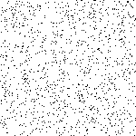
The first fifteen steps of points converging to a smiley face
This process is slow but produces quite nice stippled versions of images. The convergence also takes an infinite amount of time in theory, so computing the diagram has to set some cutoff. In my implementation, I decided to stop iterating over the points once the total amount of change in all the pixels was less than 0.0005. This was a bit of an arbitrary limit, but it had to be set somewhere – and this point produced nice results without an unreasonable waiting time.
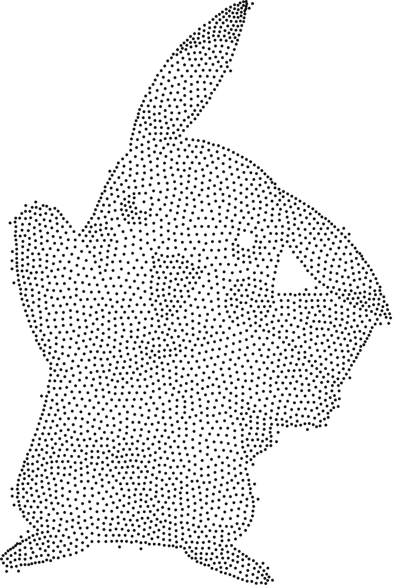
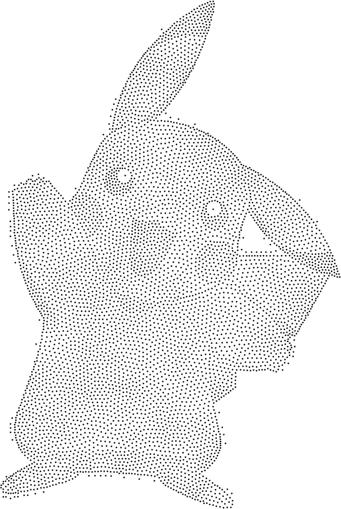
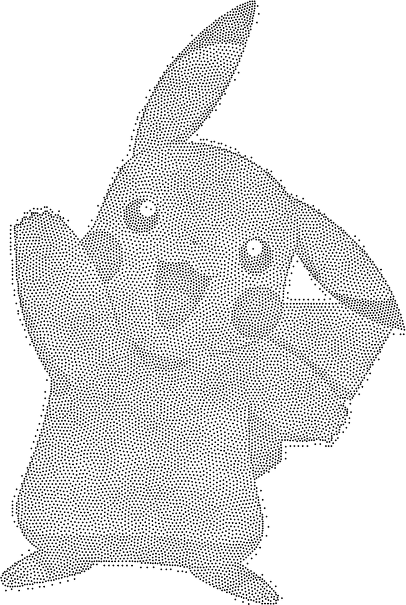
Weighted Voronoi Stippling representations of Pikachu with approximately 3000, 6000, and 12000 stipples.
The Traveling Salesman Algorithm
Once I had determined an effective way to represent an image using dots, I had to write code to connect the dots with lines. Since each image used so many dots, it was immediately obvious that I had to use some sort of approximation to find the correct solution.
I didn’t experiment too heavily with different approximation techniques since there has already been so much research done into TSP approximations. The Concorde TSP solver is freely available online and seems to be the most efficient solver currently publicly available. (It currently holds the world record for the largest set of cities correctly solved, having been used to find the correct answer to a problem with some 86,000 cities.)
I instead used a simple greedy nearest-neighbor algorithm to calculate an approximate TSP solution. This is almost certain to solve the system non-optimally and often results in “bad” artistic representations of images. However, the nearest-neighbor algorithm is fast to implement and easy to understand. For images with larger stipple counts, the errors are less pronounced, but the algorithm uses quite a lot of memory.
Here are some images I generated using my Traveling Salesman Art implementation. Try and guess the logos:
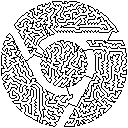
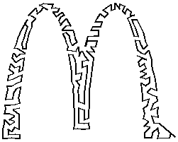
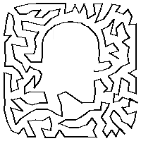
 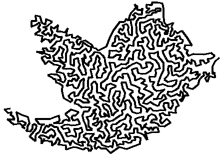
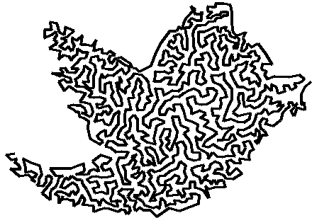
I got the bulk of my inspiration from this page about creating Traveling Salesman Art by a professor at Oberlin College and this paper on creating Weighted Voronoi Stipplings by Adrian Secord. If you’d like to dive in and start making your own stipplings and TSP art, check out my code on Github.